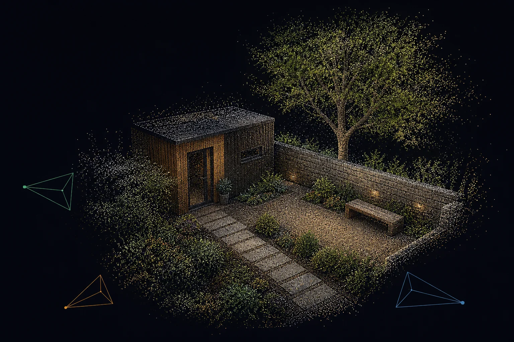

BIRD▶
Wanyard records any RTSP camera and turns days of footage into encounters you can actually skim. Filter by object and area, preview the whole visit, or swipe through a private detection feed.
git clone https://github.com/blowhacker/wanyard && cd wanyard && docker compose up -d --build
The detector sees frames. Wanyard turns them into visits: one walker, one card; a group moving together, one encounter. Then it gives you three good ways to find the moment.
Choose cameras, object classes and multiple areas. Areas belong to their camera, so “all of the front” and “peanut table in the garden” can coexist.
Hover on desktop or press on touch. The preview follows the detected subject smoothly through the frame and keeps playing for the encounter, not an arbitrary second.
Full-height video on mobile, arrow keys on desktop, and the next encounter preloaded. The URL follows the current item, so the exact moment is shareable.
Wanyard recognises classes such as bird, cat, dog and person. It does not recognise faces, search profiles or upload footage for somebody else to analyse.
Choose two or more cameras with overlapping coverage and Wanyard reconstructs their shared view as an interactive 3D point cloud.
Discover overlapSelect a camera set. Wanyard checks whether the views connect before creating it.
Reconstruct on demandBuild new geometry when the scene changes, at the density your GPU can handle.
Explore it liveOrbit and zoom in the browser, apply current camera colour, or download the PLY point cloud.
Geometry is reconstructed on demand; live colour is projected onto that model. Scale is relative until the cameras are calibrated, and sky, reflections, moving subjects or weak overlap can leave noise and gaps.

Wanyard is opinionated about the boring parts—capture, timestamps, retention and browser playback—so finding the interesting parts feels light.
Watch every camera live over WebRTC. Footage is written as timestamped MP4 segments, ready to scrub, replay and export without a cloud round-trip.
Select the classes worth keeping in settings. YOLO detects them in real time and can backfill recent recordings after an interruption.
Tracking and spatial-temporal grouping join repeated boxes into one useful encounter, while preserving the path needed for a smooth preview.
Find moments in the timeline, detection wall and feed. When cameras overlap, step out of the frames and explore their shared scene in 3D.
Keep a chosen number of days or cap disk usage. Wanyard prunes the oldest footage first and never lets the recorder casually eat the drive.
Bring Docker, a footage directory and an RTSP URL. The ingest, recorder, web app and detector come up together; add the GPU override when you want acceleration.
No camera lock-in. No "verified device list." If you can paste a URL that starts with rtsp://, wanyard records it.
+-----------+ rtsp +---------+ relay +--------------------+ | camera(s) | ------> | go2rtc | ------> | mediamtx + stamper | +-----------+ +----+----+ +-----+--------+-----+ | WebRTC | | v v v +-----+-----+ +--------+ +--------+ | live wall | | MP4 disk | | YOLO | +-----------+ +----+---+ +---+----+ | | synced frames | | events v v +--------+ +----------------+ | VGGT | | viewer + wall | +---+----+ +----------------+ | on demand v +---------------+ | Spatial + PLY | +---------------+
go2rtc owns the camera connection and serves low-latency WebRTC. MediaMTX relays the recording stream; the stamper carries a frame-accurate clock in SEI metadata. Recording and detection stay independent while Spatial reconstructs synchronized frames only when asked.
An honest comparison. The other projects in this space are good. Pick the one that matches what you actually want to run.
:8091, and nothing else to configure.
Wanyard needs Docker and a directory to write footage to. The recorder and detector work immediately; experimental Spatial views are an optional CUDA setup.
# clone, build, run git clone https://github.com/blowhacker/wanyard.git cd wanyard docker compose up --build -d # add your first camera open http://localhost:8091/settings
# enable the gpu override cp docker-compose.gpu.yml \ docker-compose.override.yml docker compose up --build -d # yolo worker now runs on cuda docker compose logs wanyard-yolo
models/vggt/model.pt. More cameras and full-density output need more VRAM.Stop renting your own footage.
git clone https://github.com/blowhacker/wanyard && cd wanyard && docker compose up -d